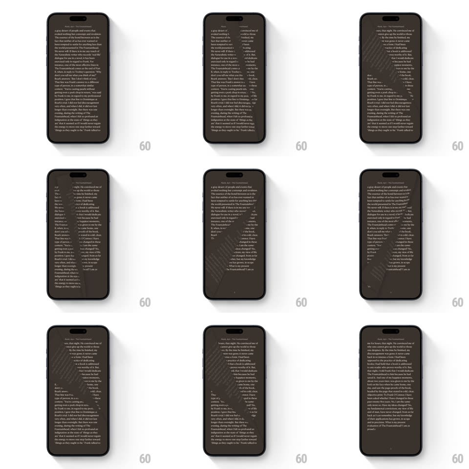

Media
Frame-by-frame

Rebuild this interaction 1:1: Apple Books' page-flip - a skeuomorphic 3D page curl that tracks a horizontal drag across a two-page spread, the turning page lifting at the spine, curling with a soft shadow, and settling onto the opposite side.

Rebuild this interaction 1:1: Apple Books' page-flip - a skeuomorphic 3D page curl that tracks a horizontal drag across a two-page spread, the turning page lifting at the spine, curling with a soft shadow, and settling onto the opposite side. ## Integration Integration: stack-agnostic spec - springs given as stiffness/damping, timed motions as duration + curve; map every value to your framework and animation library of choice. ## Scene Dark reading view showing a book spread: sepia-toned page with two justified text columns (book text, chapter header "Book II - The Sound and the Fury" style). The page has a subtle paper gradient, a center-spine shadow, and small page furniture (header/title at top). ## Motion spec Pattern: gesture-driven 3D page curl. - Drag from the right edge grabs the page corner; the page rotates around the vertical spine axis 1:1 with the finger (rotateY 0 -> -180deg mapped across the drag width). - The lifting page curls: the free edge leads, the paper bends with a gradient shading (highlight on the curl's crown, shadow beneath it), and the page's back face shows the next page's content mirrored-dimmed. - A soft drop shadow from the turning page sweeps across the static page underneath, tracking the curl position. - Release past ~40% completes the flip (spring ~200/20, ~300ms); before 40% it springs back to flat. - The newly revealed spread settles with the spine shadow re-centering. ## Calibration - The curl is position-driven, never time-driven - the finger owns the page until release. - Shadow and shading move with the geometry; a static shadow under a moving page breaks the illusion. ## Reduced motion Instant crossfade between spreads (150ms) on tap/swipe, no curl. ## Don't miss - The turning page's back face shows real content (the following page), not a blank or solid color. - The spine shadow is always present, even at rest - it is part of the spread, not the animation.